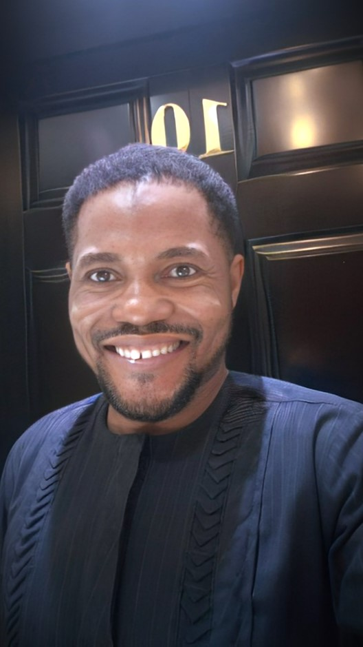

Intro

I am a skilled and experienced Web and Software Developer based in Lagos, Nigeria. With a
strong focus on delivering exceptional results, I specialize in a wide range of skills including:
Website Design, Software Programming [C++ || C# || Visual Basic ||ASP.Net || Python || Window Forms ], Data Analytics and Business Development Services,
I am dedicated to delivering high-quality solutions that exceed client expectations. By combining technical
expertise, creativity, and a deep understanding of client's needs, I strive to empower individuals and
businesses to thrive in the digital landscape.
Let's collaborate to shape your future success.
About

Ali Abdulquadir is a highly motivated and accomplished professional with a diverse range of experiences in the
field of Business Development and beyond. With a strong passion for Coding and Technology, He consistently
demonstrates a drive for excellence and a commitment to personal and professional growth.
His educational background includes a B.Tech in Chemistry Technology, providing him with a solid foundation
for his professional pursuits. Throughout his career, he has successfully leveraged his theoretical knowledge
and practical skills to excel in various roles. With a wealth of experience in Banking, Business Development,
and Administration, He has consistently delivered outstanding results and made significant contributions to
the organizations he has been a part of.
His professional journey showcases a range of responsibilities, particularly in Business Development. Alongside
his notable achievements and projects, He has demonstrated his ability to thrive in challenging environments
and deliver acceptable and commendable results.
Apart from his technical expertise, He is known for his strong interpersonal skills and effective collaboration
with cross-functional teams. He has a proven track record of building and nurturing strong relationships with
clients, colleagues, and stakeholders, contributing to his success in various collaborative projects.
Driven by a growth mindset, He remains committed to continuous learning and professional development. He actively
seeks out opportunities to expand his knowledge and stay updated with the latest industry trends and advancements,
particularly in the areas of Web Development, Software Programming,and Data Analytics .
His adaptability and enthusiasm for embracing new technologies enable him to tackle complex challenges and drive
innovation.
Beyond his professional pursuits, He is passionate about traveling and understanding cultural diversity.
This well-rounded approach to life allows him to maintain a healthy work-life balance while nurturing his creativity
and overall well-being.
In summary, Ali AbdulQuadir's impressive background, coupled with his dedication, expertise, and passion, makes him
a valuable asset in any professional setting. His commitment to excellence, adaptability, and collaborative nature
position him as a standout professional capable of making meaningful contributions to his field and the organizations
he works with.
Education
- 1997-2003
Federal Government College, Kaduna.
- 2003-2004
Jefap International School, Suleja.
WASSCE
- 2005-2011
Federal University of Technology, Minna.
B.Tech [Chemistry Technology]
- April 2022 - Due Dec 2024
Institute of Development Technology Canada üçÅ
General Programming [Software Development]
- Aug - 2023
Coursera - [Google]
Foundations: Data, Data, Everywhere
- Aug - 2023
Coursera - University of Michigan
Programming for Everybody (Getting Started with Python)
Work Experience
Concept Amadeus Limited
Sept 2017 - March 2020
Administrative Manager
- Supervised day-to-day operations of the administrative department and staff members.
- Hired, trained, and evaluated employees, and took corrective actions when necessary.
- Worked with accounting and management team to set budgets, monitor spending, and processed payroll and other expenses.
- Prepared expense reports and negotiated with vendors on competitive prices.
- Overseeing Travel Arrangements and itinerary of the CEO and corporate guests.
- Supervised special projects and tracked progress toward company goals.
- Built new and expanded my existing skills by engaging in educational opportunities.
- Other duties as assigned.
Skye Bank Plc
June 2015 - Feb 2017
Business Development Officer
- Identified and pursued business opportunities such as new markets, products, or customer segments, that align with the bank's growth strategy.
- Developed and maintained client relationships by interacting with existing and potential clients, understanding their financial needs, and providing tailored solutions.
- Promoted bank products and services to clients by developing marketing strategies, creating presentations and proposals, and delivering persuasive pitches to prospective clients.
- Collaborated closely with various internal teams within the bank, such as product development, marketing, and risk management to align business strategies, gather market intelligence, and coordinate the implementation of new initiatives.
- Monitored and analyzed market trends by staying informed about market trends, regulatory changes, and industry developments, such as markets, competitors, and customer preferences to identify emerging opportunities or threats.
- Analyzed data, prepared reports, and provided recommendations to senior management for informed decision-making.
Mainstreet Bank Ltd.
Sept 2013 - Jun 2015
Electronic Banking, Development & Support [Northern Nigeria]
- Promoted the sales of the bank's electronic products and services and provided sales strategy and support for all the branches in northern Nigeria.
- Drafted/ Prepared proposals to suit corporate customer's needs.
- Joint calls with relationship officers, branch and regional managers for presentations on the bank's retail and electronic products while providing support to ensure mandates were won.
- Conducted extensive market feasibility research and profitability indices in deploying alternative channels such as ATMs and POS terminals.
- Processed Verve, VISA, and Mastercard chargebacks when necessary.
- Assisted personal and business customers on the phone when they get locked out of their online banking accounts and need password resets.
- Provided support to our business customers that process bulk payments with cash management services, integrated payment, and switching systems such as Interswitch, ETrazact, and Remitta.
- Attended vendor conferences and participated in periodic calls with clients to discuss service issues.
- Trained client service staff on proper back-office processing of electronic banking services.
- Worked with the marketing committee to increase the usage of electronic banking delivery channels.
- Developed and maintained electronic banking policies and procedures.
- Escalated any deficiencies or issues relating to electronic banking services and sales.
GTBank Plc.
Sep 2011 - Jun 2012
Customer Service Unit (Internship)
- Answered calls professionally and answered questions about account types and banking products such as call deposits, money market accounts, loans, and credit facilities.
- Acknowledged and appropriately responded to all inquiry issues or complaints raised by customers via the e-mail support group to ensure excellent continuous delivery of services.
- Reviewed and explained bank charges.
- Helped customers protect their accounts by reviewing suspicious activity, reviewing transactions, and reissuing compromised debit and credit cards.
- Assisted with customer updates on accounts such as address change, Name change, or account upgrade.
- Ensured ticket IDs are generated for early requests or complaints and duly assigned sub-tasks to business units responsible for resolution.
- Ensured by following up on tasks assigned to business units and the ticket generated for every request or complaint are resolved within the agreed turnaround time TAT.
- Provided feedback to management on the efficiency of customer service processes and on areas of improvement to ensure excellent service delivery.
- Other duties as assigned.
Skills

Website Design
- Proficient in HTML, CSS, JavaScript
- Experience with front-end frameworks like React
- Familiar with back-end technologies like Node.js and Express
Creating visually appealing and user-friendly websites that align with clients' goals and target audience.
Implementing responsive design principles to ensure seamless functionality across different devices.
Incorporating modern design trends and user experience best practices.
Software Programming
As a junior developer, I possess a strong foundation in software programming. I am proficient in several programming languages,
including C++, C#, Visual Basic, and Python, with varying levels of expertise.
My passion for programming, problem-solving abilities, and commitment to continuous learning make me well-equipped to contribute
to software development projects and further expand my programming expertise in a dynamic team environment.
Skills Acquired & Proficiency Level
-
C++: [80 %]
- Strong understanding of C++ fundamentals
- Experience with data structures and algorithms
- Developed various applications using C++
-
C#: [80 %]
- Proficient in C# programming
- Experience with .NET framework
- Developed Windows applications using C#
-
Visual Basic: [80 %]
- Skilled in Visual Basic programming
- Developed desktop applications with VB.NET
-
Windows Forms: [80 %]
- Competent in creating Windows Forms applications
- Familiar with GUI design principles
-
ASP.NET: [80 %]
- Proficient in building web applications using ASP.NET
- Experience with ASP.NET MVC and Web API
- Knowledge of ASP.NET Core
-
Python: [50 %]
- Basic proficiency in Python programming
- Familiarity with Python libraries and frameworks
- Interest in expanding Python skills
Data Analytics
I have a foundational understanding of data analytics concepts and tools, with a proficiency level of approximately 50%.
I have a foundational understanding of data analytics concepts and tools, with a proficiency level of approximately 50%.
I have a foundational understanding of data analytics concepts and tools, with a proficiency level of approximately 50%.
I have worked with data visualization libraries such as Matplotlib and Seaborn in Python to create basic data visualizations.
While my current proficiency in data analytics is at an introductory level, I am actively interested in and committed to further developing my skills in this field.
I recognize the growing importance of data-driven decision-making in today's technology landscape and am eager to expand my knowledge and expertise in data analytics
to contribute effectively to data-driven projects in the future.
Business Development
Assisting businesses in identifying growth opportunities and implementing effective strategies.
Conducting market research, competitor analysis, and customer profiling to optimize business performance.
Providing consultation and guidance on digital marketing, SEO, and online presence enhancement.
Contact
Thank You
Your message has been successfully sent. I will get back to you as soon as possible.
Return to Home